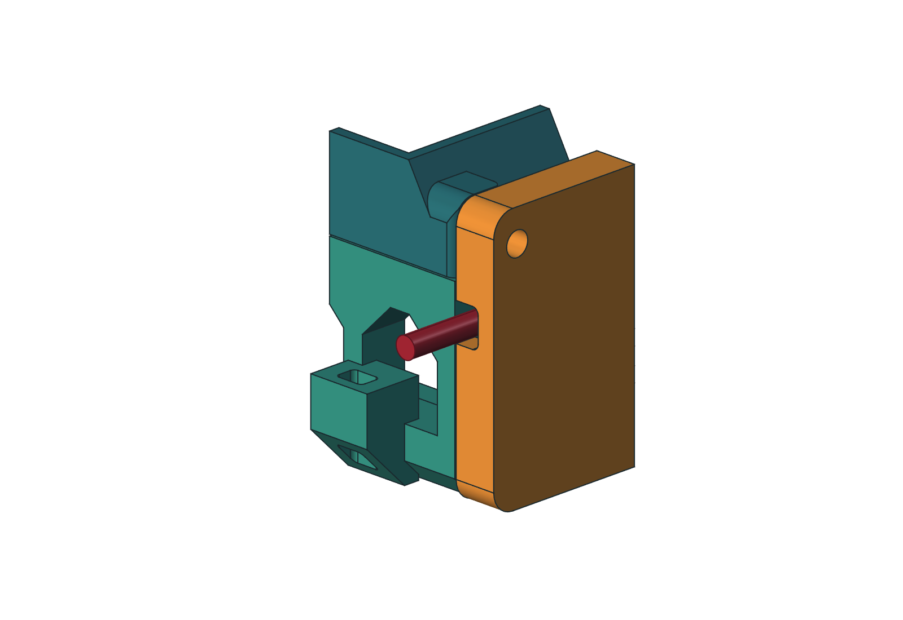
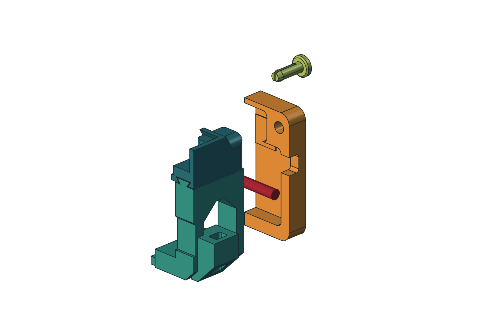
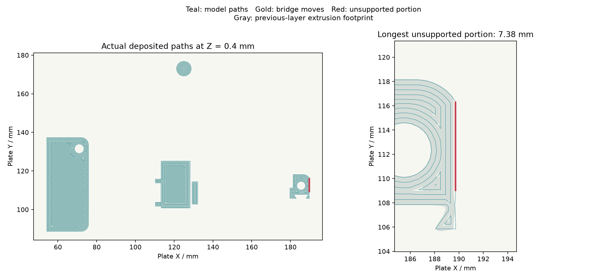

Lay the cable in.
Then close the cover.
The fan cover now has a rounded groove open to its mating edge. Lay the wire into the seam; the tray closes the passage when the cover is fitted. The connector stays outside. Two zip-tie anchors on each tray route the wire along the outside of the fan frame and stay in place when the cover comes off.
Download covers, trays, fit coupon and native model ↓
Replace Rev H covers 05/06 and trays 09/10. Your printed arms, ducts, rails, pins and optional H-R1 retainers keep their geometry. This upgrade fits the preserved Rev H model, with or without H-R1; it does not fit Minimalist M1.1.


1. Print the corner test first
- Extract the ZIP. Open
Print/00_cable_fit_coupon.3mfas geometry in OrcaSlicer. It contains a cropped duct corner, the new tray and cover corners, and one original printed pin. - Keep 100% scale and the supplied orientations. Select your P1S, 0.4 mm nozzle and actual ASA spool profile. The reviewed process uses 0.20 mm layers, six walls, six top/bottom layers, 100% rectilinear fill, Arachne walls, 8 mm outer brim and supports off.
- The short duct coupon prints front mating face down to support its cropped roof; the cover, tray and pin retain their full-part print directions. It checks fit, not the original duct’s print orientation. Set both Bridge direction and Internal bridge direction to 180°, with Relative bridge angle and Align infill direction to model off. Inspect the slice. Temperatures and drying follow the actual spool.
- Remove the brim and burrs. Slide the tray corner into the duct corner. Lay a section of the actual cable in the cover groove, fit the cover and insert the pin. The pin must latch and the cable must remain free of compression. Neither the connector nor the cable end needs to be threaded through a hole.
- Remove the pin and cover while leaving the wire in place. Feed a zip-tie tail through the anchor and check access to both openings. If the groove binds, a latch does not seat, or a lug cracks, resolve the fit before printing the full replacements. These short pieces are test coupons, not installed parts.

The four replacements are estimated at 225.44 g and 7 h 15 m 30 s across three plates. The corner coupon is 16.25 g and 1 h 7 m 13 s. These are Orca estimates under the reviewed process, not measured print results. All four layouts have zero disconnected floating components in the deposited-path screen; the longest unsupported deposition span is 7.38 mm. That geometric screen does not prove adhesion or ASA bridge quality.
2. Print the four replacements
Print 20_both_cable_covers.3mf once, then 09_left_fan_tray.3mf and 10_right_fan_tray.3mf: four parts on three plates. Individual covers 05 and 06 are replacement alternatives already included on plate 20. STEP, STL and standard 3MF are alternative formats of the same geometry.
The covers print with their broad front faces down and their grooves opening upward. Trays print grille down; the new anchor undersides grow outward at 45°. Keep the supplied orientation. The three full-size plates use automatic bridge direction in their reviewed slices; the 180° override above is for the coupon's duct interface.
The Print folder's standard 3MFs contain geometry only. Orca_Review contains the separately labeled reviewed settings and G-code. Re-slice for your actual spool; no print has been sent to a printer.
3. Route the wire on the stationary tray

- Remove the laptop and support the fan modules during service. Keep the existing arms, ducts, rails and optional H-R1 bars. Remove each fan cover's two printed pins, withdraw the cover, and exchange the tray for its matching handed C1 tray.
- Fit the fan to the tray, orienting its wire exit toward the outside rail where practical. Keep the wire away from the blades and grille. These are external cable anchors, not fan restraints.
- Feed ties through the two outboard lugs and route the cable along that side. Leave a relaxed bend between the cover groove and the nearest tie; leave service slack for the connector and tray removal. Do not pull ties tight enough to damage the jacket or bend a printed lug.
- Lay the cable into the rounded groove at the cover's rear/outboard edge. Fit the cover and reinstall both pins. The old closed front-face hole has been filled. The cable should sit freely in the new side passage, with the connector outside.
- Check that both pins latch, the cable is clear of the rotor, and the cover can be removed while the cable remains on the tray. Before sliding out a tray, disconnect its fan lead and free any cable attachment beyond that tray. Ties on the tray can remain installed.
If H-R1 retainers are installed, their existing service rule still applies: removing one side bar releases both the duct and upper rail on that side. Support both. The cable upgrade does not alter that retention system.
What was checked

Native checks compare the fourteen unchanged installed parts against H-R1, verify the four replacement solids, and check intended gaps, the laptop and fan envelopes, cable capture, open-edge wire placement, tie-tail access and sampled cover/tray removal. A small running gap around a model cable is not a tested strain-relief rating. Inspect the actual printed groove for sharp edges and abrasion.
Release evidence links the saved native model, reopened GUI check, STEP roundtrips, closed meshes, P1S bed/brim clearances and Orca path audits. The native file contains the full eighteen-part assembly including optional H-R1 retainers; the print package contains only the four C1 replacements and the fit coupon. It is a fixed-size Rev H upgrade; editing the old parameter sheet does not automatically adapt the cable features.
The original Rev H air ducts and CFD records are preserved. This cover/tray revision has no new airflow or cooling result. The ongoing Rev H simulation sequence retains its own exploratory limits.
Back to Rev H ↗ · H-R1 removable retention ↗ · Editable source and reports ↗